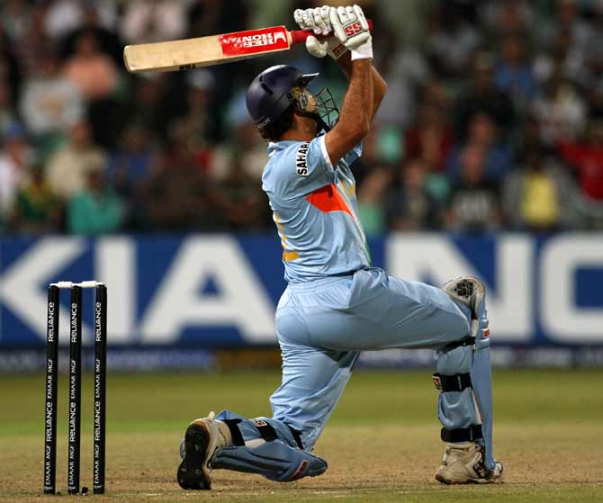
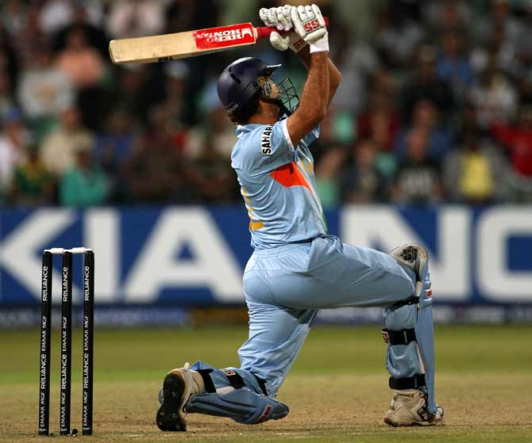

Yuvi's magic in T20
Registering his name in the history books, the left-hander then became the first Indian batsman and second overall after South Africa's Herschelle Gibbs to achieve the feat in international cricket. ust before the Stuart Broad, Yuvraj had an altercation with Andrew Flintoff, which was caught in the on-field cameras. Yuvraj had once revealed what Flintoff had exactly.
Yuvi revealed in the 22 Yarns podcast, "I remember I hit two good boundaries off Flintoff which he obviously didn't like. He said something to me and I said something back. It was quite a serious fight at that time. The umpires also came in. I just felt like I wanted to hit every ball out of the park." "Luckily, the first ball I hit (off Broad) went out of the park. The second ball I hit went into the crowd. The third ball I hit over point, where I hadn't even hit a boundary in my career. Collingwood came and told Broad to keep bowling yorkers to me outside off-stump because the off-side was big.
"But Broad thought of bowling into my legs. So when he decided to do that, I knew he was in trouble. The fifth ball hit the toe of my bat, it was a small boundary that went over Flintoff. The sixth ball I knew he has to bowl a yorker. So I was ready to hit it straight and it was in my arc,” said Yuvraj.
“My first look was to Flintoff, giving him a cheeky smile. My second look was to Dimitri Mascarenhas sort of telling him that the scores are settled and then obviously I did a fist pump with Dhoni. It actually didn’t register to me that I had hit six sixes. For me, it was all about settling the scores with England," he further said.
The Men in Blue were able to win the inaugural ICC T20 World Cup in 2007 and Yuvraj was a vital player for the team in the tournament. The 38-year-old was also phenomenal in India's World Cup triumph in 2011 as he became the first all-rounder to score over 300 runs and scalp 15 wickets in a single World Cup.
The feat included four Man of the Match awards and Man of the Tournament for 362 runs and 15 wickets. In 2019, Yuvraj had announced his retirement from all forms of cricket. With a career spanning over 304 ODIs, 58 T20Is, and 40 Tests, Yuvraj cemented his place as a player who could win matches for his side either through his electric fielding, fierce batting, or smart bowling.
The flamboyant batsman amassed 6 sixes in Stuart Broad's over and scored his fifty of just 12 balls, which is still the fastest in the T20 format. In that match between India and England, the Men in Blue had won the toss and opted to bat first.
Yuvraj came out to bat when Robin Uthappa's wicket fell and he provided the late flourish allowing India to post 218 runs on the board. India went on to win the match against England by 18 runs.
It was in the 19th over of India's innings, when Yuvraj took Broad to the cleaners, hitting him for 6 sixes and taking India's total over the 200-run mark.